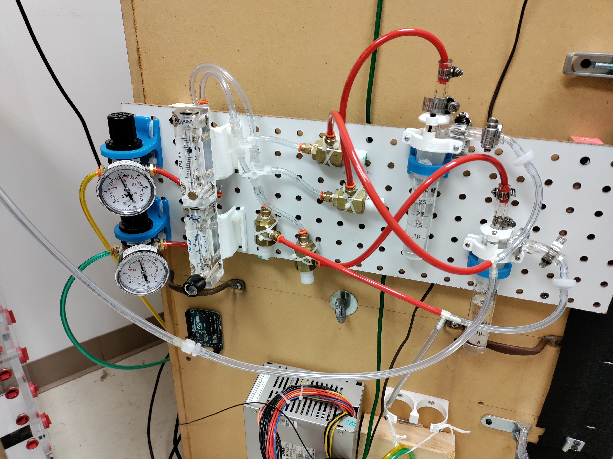

Olfactometers
Background:Olfactometers are tools used to deliver odor stimuli during experiments. They are crucial for studies of the olfactory system, both for basic and applied research. The general principle of most olfactometers is that an odor headspace is produced by containing a quantity of an odorant in a small bottle. Air is passed through the bottle, displacing the headspace carrying the odor, and is diluted into a carrier stream. The carrier stream passes over the sensory organs of the organism being studied or the sensors of electronic systems, providing a consistent and defined stimulus. Each of the below products was developed in house, the performance validated using an Aurora MiniPID, and was tested in neural recording experiments with locusts.
24-channel / 8-channelThe first olfactometer project was the development of a 24-Channel system. Prior to developing this multi-channel olfactometer, the lab had manually switched between odor bottles during experiments. Not only was this time and labor intensive, it also was a sensitive operation, where slightly bumping anything on the floating table could disturb the positioning of the electrode and ruin or degrade the recording.
To address this I worked with another graduate researcher to develop a multi-channel olfactometer, and interface it to the National Instruments DAQ used for data collection. We initially prototyped the system using opto-isolated relays controlling fast solenoid valves, with pressure and flow regulators controlling air flow. When actuated, the solenoid valves would release air to pass through the odor bottles, and push the headspace the mixing tube with the carrier stream. In later iterations we switched to a commercial off-the-shelf (COTS) solid-state relay board, which accelerated build times and eased replacements in case of failure. Each solenoid was mapped to a register in the NI DAQ system, and controlled via custom scripts using Matlab. This enabled scripting and automation of experimental parameters, dramatically reducing task load and reducing experiment duration.
I used the same design to produce a small, modular olfactometer for producing odor stimuli in the trackball project, featuring only a single 8 channel manifold and relay board. Control was achieved through a custom embedded library on a Teensy microcontroller, interfaced to a python GUI for task settings (see Trackball project).
 Continuous-Stimulus Level-Shift
Continuous-Stimulus Level-Shift
One application where the odor bottle approach is less suitable is during extended duration odor stimuli. This is crucial, however, for studying how changes in concentration are detected following adaptation to an odorant. To achieve this, I developed a module for the 24 channel olfactometer using bubblers to produce a continuous stream of odor at defined concentrations. Each bubble consisted of a fritted-glass diffuser immersed in a solution of odorant; when air was driven through, the bubbles become saturated with the odorant, and can then be diluted to produce defined concentrations. These were used to produce continuous streams of defined concentrations, which were mixed to produce defined increases or decreases in concentration from a constant baseline. To simplify usage, the network of solenoid valves used to direct the bubbler and clean air streams to either the output port (directed at the locust) or the exhaust port (vented) could temporarily replace a subset of channels on the 24-channel olfactometer, easing incorporation into experiments.
Continuous Odor Stimulus for 2-Chamber AssayA 2-chamber assay is an assay where an organism is able to travel between two chambers. Preference is measured by measuring the amount of time spent in each side, and differences in behaviors on each side can be analyzed further. This was also used to test simultaneous recording quality for the minimally-invasive surgical preparation. However, a much larger amount of odorant must be supplied than odor bottles are capable of, and for a longer period. The first approach was to use small pieces of Kimwipe soaked in a defined quantity of odorant, with a continuous, regulated air stream passed over them, and mixed into the air flowing into one side of the chamber. However, for longer experiments and more volatile odorants, evaporation quickly reduced the concentration of the odor in the chamber. To address this, I constructed a simplified bubbler system based off the one described above, with different bubblers for each odorant solution. By changing the rate of flow from the bubbler into the mixing chamber, different concentrations can be achieved. Using this, more volatile odorants can be used, and for moderately volatile odorants much longer experiments can be performed.
